Primary OOF cohort N=23. Validation passed: True.


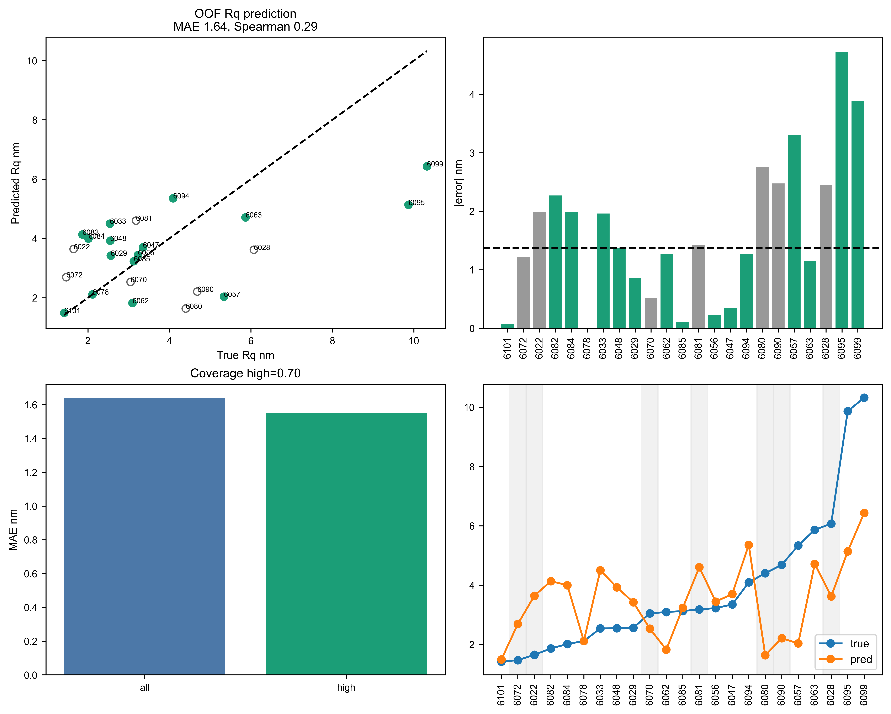
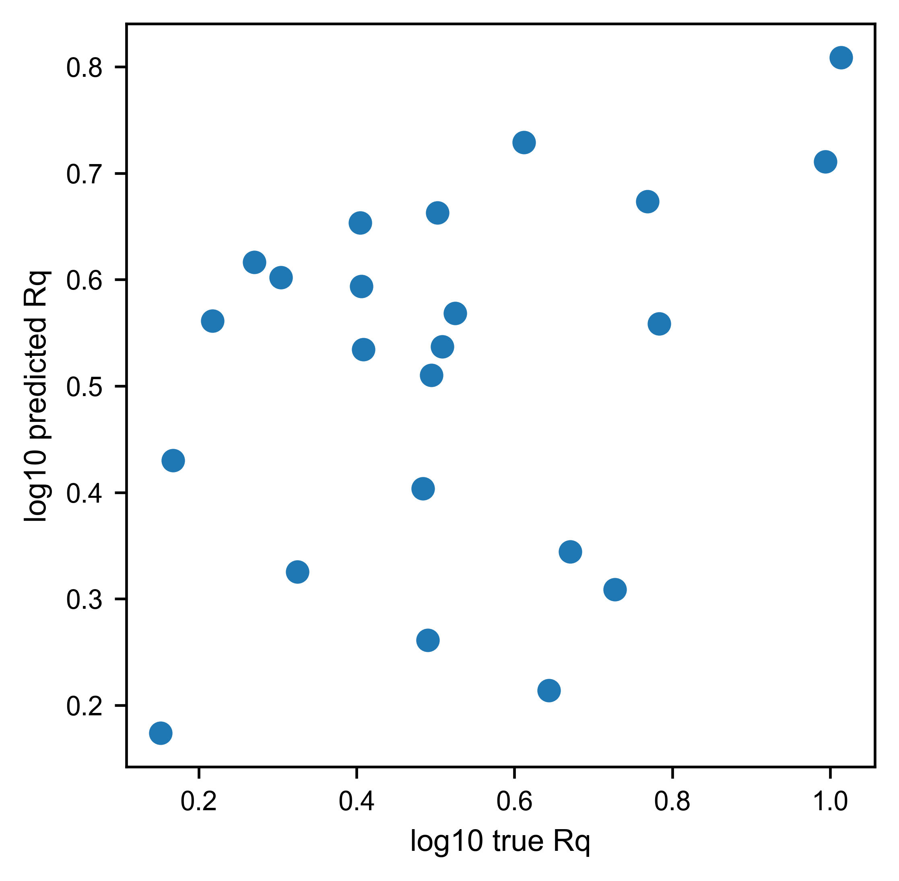
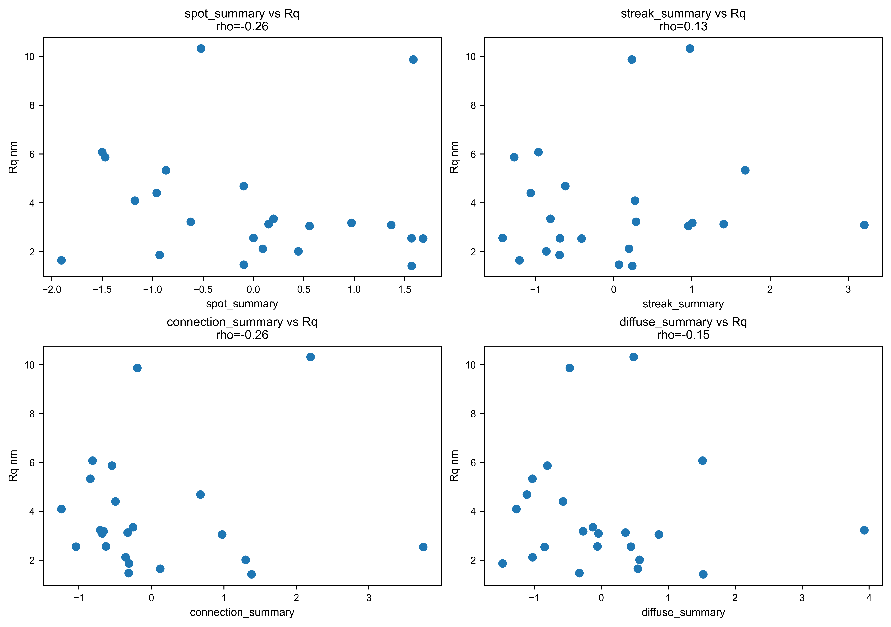
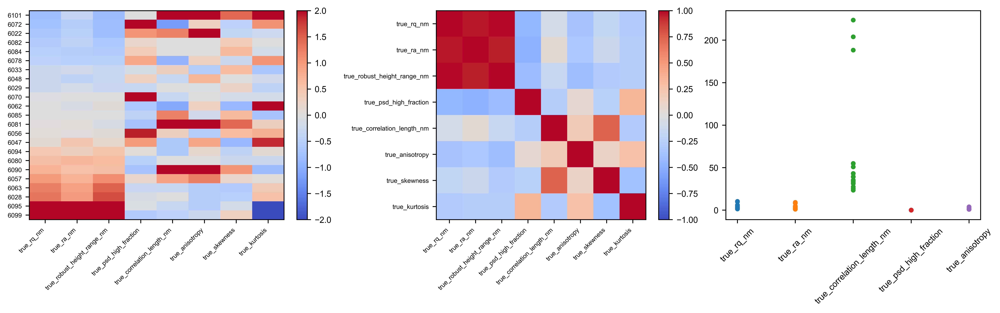
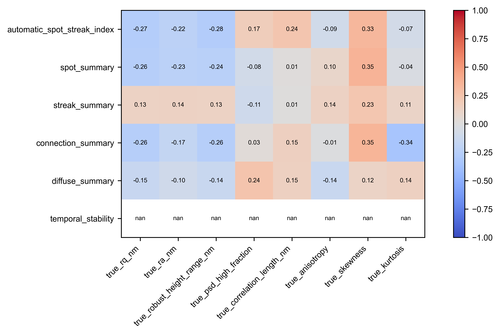
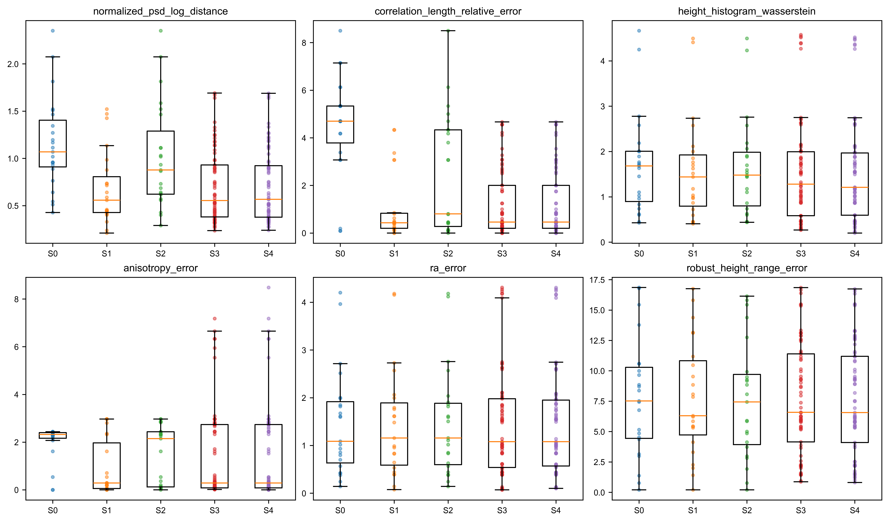
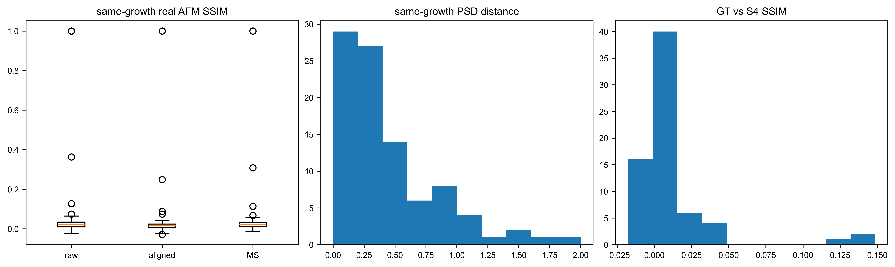
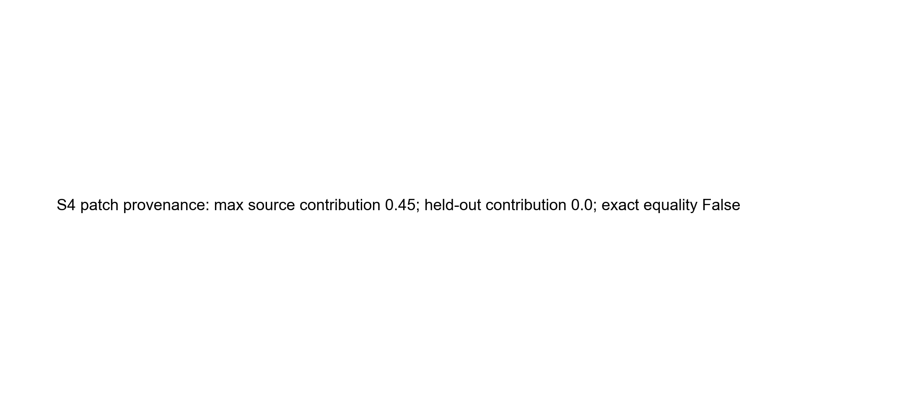


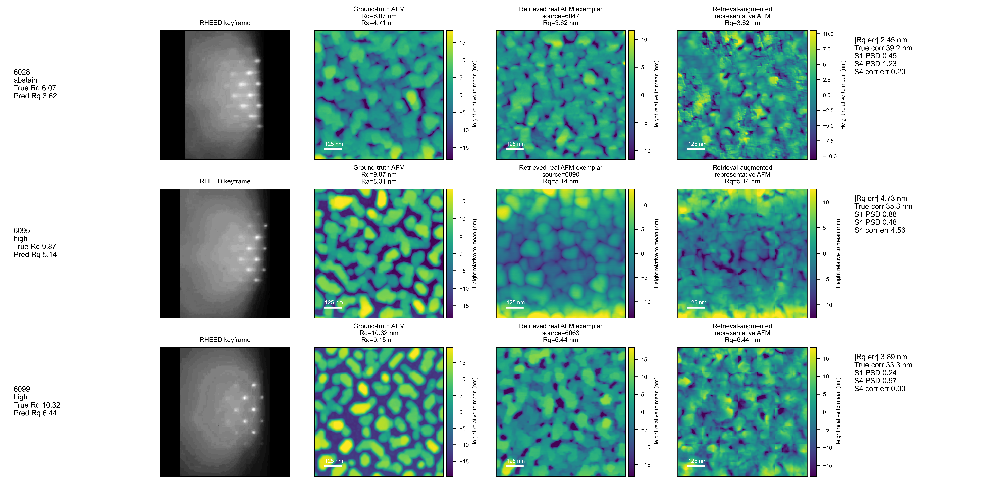
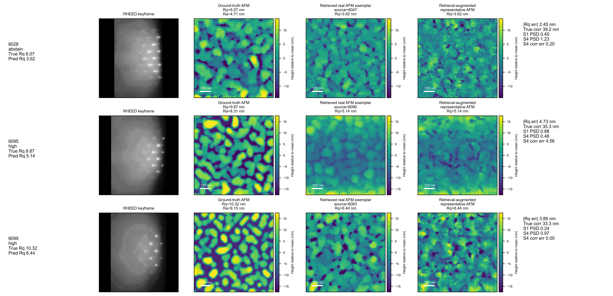


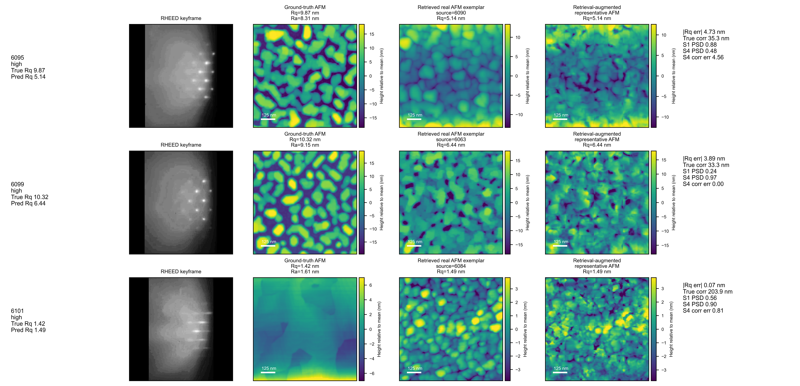
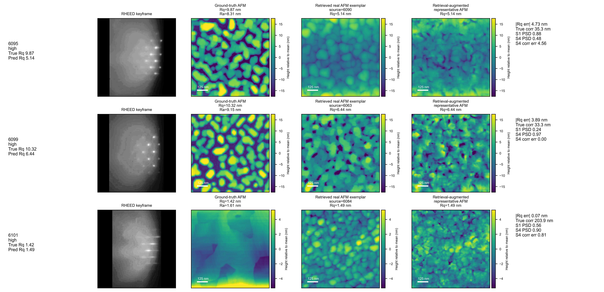
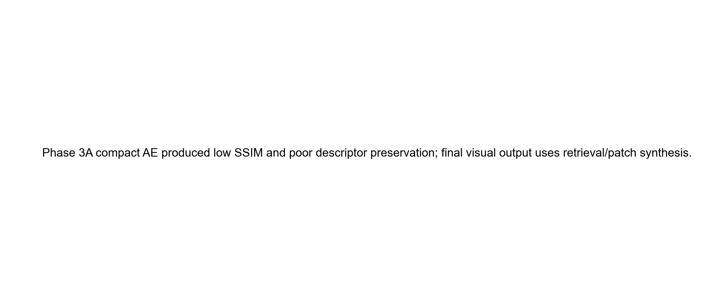
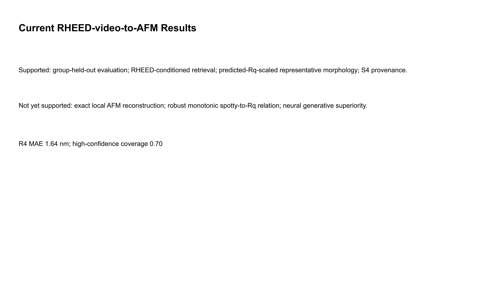
| sample_id | growth_run_id | growth_stage | video_stage | keyframe_index | clip_start_index | clip_end_index | roi_width | roi_height | support_level | high_confidence | quality_flags | true_rq_nm | predicted_rq_nm | rq_absolute_error_nm | rq_relative_error | true_ra_nm | true_robust_height_range_nm | true_correlation_length_nm | true_psd_high_fraction | true_psd_slope | true_anisotropy | true_skewness | true_kurtosis | automatic_spot_streak_index | spot_summary | streak_summary | connection_summary | diffuse_summary | temporal_stability | s1_source_sample_id | s1_source_afm_path | s1_output_rq_nm | s1_rq_error_nm | s1_psd_distance | s1_correlation_length_relative_error | s1_histogram_wasserstein | s1_anisotropy_error | s4_output_path | s4_output_rq_nm | s4_rq_error_nm | s4_psd_distance | s4_correlation_length_relative_error | s4_histogram_wasserstein | s4_anisotropy_error | s4_largest_source_contribution | s4_source_group_count | s4_exact_pixel_equality | s4_heldout_source_contribution | ground_truth_afm_path | rheed_keyframe_path | clip_preview_path | expert_labels_status |
|---|---|---|---|---|---|---|---|---|---|---|---|---|---|---|---|---|---|---|---|---|---|---|---|---|---|---|---|---|---|---|---|---|---|---|---|---|---|---|---|---|---|---|---|---|---|---|---|---|---|---|---|---|
| 6022 | 6022 | GaSb | GaSb | 757 | 750 | 765 | 249 | 391 | abstain | False | 1.649 | 3.640 | 1.991 | 1.207 | 1.303 | 7.523 | 54.902 | 0.000 | -3.613 | 1.818 | -0.543 | 3.307 | -0.427 | -1.905 | -1.204 | 0.122 | 0.547 | NaN | 6081 | data/pair/6081/AFM/N81 Ctr.000 | 3.640 | 1.991 | 1.521 | 3.071 | 1.698 | 1.614 | outputs/rheed_video_afm_story/phase4a/synthesized_afm_maps/6022_S4_calibrated_patch_synthesis_seed29.npy | 3.640 | 1.991 | 1.271 | 2.929 | 1.722 | 1.710 | 0.453 | 3 | False | 0.000 | outputs/rheed_video_afm_story/phase3a/morphology_bank_arrays/6022__N6022_Ctr_000_physical_centered.npy | outputs/rheed_video_afm_story/phase2a/clip_variants/keyframe_1/6022.npz | reports/rheed_video_afm_story/phase1/clip_previews/6022.png | pending | |
| 6028 | 6028 | GaSb | GaSb | 350 | 343 | 358 | 406 | 665 | abstain | False | 6.073 | 3.618 | 2.454 | 0.404 | 4.714 | 30.554 | 39.216 | 0.000 | -3.992 | 1.000 | -0.635 | 3.735 | 0.218 | -1.501 | -0.962 | -0.813 | 1.514 | NaN | 6047 | data/pair/6047/AFM/N6047_1um.008 | 3.618 | 2.454 | 0.446 | 0.200 | 1.999 | 0.286 | outputs/rheed_video_afm_story/phase4a/synthesized_afm_maps/6028_S4_calibrated_patch_synthesis_seed29.npy | 3.618 | 2.454 | 1.227 | 0.200 | 1.966 | 0.143 | 0.453 | 3 | False | 0.000 | outputs/rheed_video_afm_story/phase3a/morphology_bank_arrays/6028__N6028_1um_004_physical_centered.npy | outputs/rheed_video_afm_story/phase2a/clip_variants/keyframe_1/6028.npz | reports/rheed_video_afm_story/phase1/clip_previews/6028.png | pending | |
| 6029 | 6029 | ramp | ramp | 69 | 62 | 77 | 516 | 811 | high | True | 2.561 | 3.423 | 0.862 | 0.337 | 2.041 | 12.246 | 39.216 | 0.000 | -4.093 | 1.100 | -0.014 | 3.191 | 1.393 | 0.001 | -1.421 | -0.628 | -0.057 | NaN | 6047 | data/pair/6047/AFM/N6047_1um.008 | 3.423 | 0.862 | 0.588 | 0.200 | 0.720 | 0.186 | outputs/rheed_video_afm_story/phase4a/synthesized_afm_maps/6029_S4_calibrated_patch_synthesis_seed29.npy | 3.423 | 0.862 | 0.957 | 0.200 | 0.594 | 0.025 | 0.453 | 3 | False | 0.000 | outputs/rheed_video_afm_story/phase3a/morphology_bank_arrays/6029__N6029_1um_008_physical_centered.npy | outputs/rheed_video_afm_story/phase2a/clip_variants/keyframe_1/6029.npz | reports/rheed_video_afm_story/phase1/clip_previews/6029.png | pending | |
| 6033 | 6033 | GaSb | GaSb | 662 | 655 | 670 | 570 | 910 | high | True | 2.539 | 4.502 | 1.963 | 0.773 | 2.007 | 11.870 | 43.137 | 0.000 | -4.131 | 1.000 | 0.257 | 3.066 | 1.673 | 1.684 | -0.411 | 3.748 | -0.845 | NaN | 6090 | data/pair/6090/AFM/N6090_1um.001 | 4.502 | 1.963 | 0.985 | 3.364 | 1.624 | 2.969 | outputs/rheed_video_afm_story/phase4a/synthesized_afm_maps/6033_S4_calibrated_patch_synthesis_seed29.npy | 4.502 | 1.963 | 0.320 | 3.091 | 1.538 | 3.097 | 0.453 | 3 | False | 0.000 | outputs/rheed_video_afm_story/phase3a/morphology_bank_arrays/6033__N6033_1um_016_physical_centered.npy | outputs/rheed_video_afm_story/phase2a/clip_variants/keyframe_1/6033.npz | reports/rheed_video_afm_story/phase1/clip_previews/6033.png | pending | |
| 6047 | 6047 | ramp | ramp | 30 | 23 | 38 | 510 | 791 | high | True | near_static_clip | 3.349 | 3.700 | 0.352 | 0.105 | 3.528 | 16.769 | 31.373 | 0.000 | -3.831 | 1.286 | -0.935 | 4.473 | 0.946 | 0.199 | -0.809 | -0.252 | -0.124 | NaN | 6056 | data/pair/6056/AFM/GdSb_N6056_ctr.006 | 3.700 | 0.352 | 0.447 | 0.375 | 0.969 | 0.286 | outputs/rheed_video_afm_story/phase4a/synthesized_afm_maps/6047_S4_calibrated_patch_synthesis_seed29.npy | 3.700 | 0.352 | 0.613 | 1.250 | 0.945 | 6.652 | 0.453 | 3 | False | 0.000 | outputs/rheed_video_afm_story/phase3a/morphology_bank_arrays/6047__N6047_1um_008_physical_centered.npy | outputs/rheed_video_afm_story/phase2a/clip_variants/keyframe_1/6047.npz | reports/rheed_video_afm_story/phase1/clip_previews/6047.png | pending |
| 6048 | 6048 | ramp | ramp | 199 | 192 | 207 | 477 | 744 | high | True | 2.548 | 3.924 | 1.377 | 0.540 | 1.468 | 11.905 | 35.294 | 0.000 | -4.109 | 1.250 | -0.227 | 3.332 | 2.479 | 1.569 | -0.687 | -1.041 | 0.444 | NaN | 6047 | data/pair/6047/AFM/N6047_1um.008 | 3.924 | 1.377 | 0.329 | 0.111 | 1.518 | 0.036 | outputs/rheed_video_afm_story/phase4a/synthesized_afm_maps/6048_S4_calibrated_patch_synthesis_seed29.npy | 3.924 | 1.377 | 0.453 | 0.111 | 1.550 | 0.250 | 0.453 | 3 | False | 0.000 | outputs/rheed_video_afm_story/phase3a/morphology_bank_arrays/6048__N6048_1um_027_physical_centered.npy | outputs/rheed_video_afm_story/phase2a/clip_variants/keyframe_1/6048.npz | reports/rheed_video_afm_story/phase1/clip_previews/6048.png | pending | |
| 6056 | 6056 | ramp | ramp | 161 | 154 | 169 | 599 | 894 | high | True | near_static_clip | 3.225 | 3.444 | 0.219 | 0.068 | 2.515 | 15.510 | 43.137 | 0.000 | -3.632 | 1.000 | 0.275 | 3.860 | 1.056 | -0.622 | 0.287 | -0.705 | 3.929 | NaN | 6047 | data/pair/6047/AFM/N6047_1um.008 | 3.444 | 0.219 | 0.447 | 0.273 | 0.594 | 0.286 | outputs/rheed_video_afm_story/phase4a/synthesized_afm_maps/6056_S4_calibrated_patch_synthesis_seed29.npy | 3.444 | 0.219 | 0.440 | 0.273 | 0.300 | 0.000 | 0.453 | 3 | False | 0.000 | outputs/rheed_video_afm_story/phase3a/morphology_bank_arrays/6056__GdSb_N6056_ctr_006_physical_centered.npy | outputs/rheed_video_afm_story/phase2a/clip_variants/keyframe_1/6056.npz | reports/rheed_video_afm_story/phase1/clip_previews/6056.png | pending |
| 6057 | 6057 | GaSb | GaSb | 83 | 76 | 91 | 360 | 571 | high | True | near_static_clip | 5.337 | 2.035 | 3.302 | 0.619 | 4.144 | 25.604 | 50.980 | 0.000 | -3.844 | 1.364 | -0.058 | 3.456 | -3.066 | -0.868 | 1.684 | -0.842 | -1.028 | NaN | 6078 | data/pair/6078/AFM/N78 Ctr.000 | 2.035 | 3.302 | 0.402 | 0.462 | 2.574 | 0.197 | outputs/rheed_video_afm_story/phase4a/synthesized_afm_maps/6057_S4_calibrated_patch_synthesis_seed29.npy | 2.035 | 3.302 | 0.724 | 0.462 | 2.581 | 0.221 | 0.453 | 3 | False | 0.000 | outputs/rheed_video_afm_story/phase3a/morphology_bank_arrays/6057__GdSb_N6057_edge_019_physical_centered.npy | outputs/rheed_video_afm_story/phase2a/clip_variants/keyframe_1/6057.npz | reports/rheed_video_afm_story/phase1/clip_previews/6057.png | pending |
| 6062 | 6062 | ramp | ramp | 128 | 121 | 136 | 461 | 678 | high | True | near_static_clip | 3.092 | 1.824 | 1.268 | 0.410 | 2.273 | 15.566 | 25.440 | 0.000 | -4.184 | 1.167 | -0.946 | 4.941 | -1.860 | 1.366 | 3.206 | -0.679 | -0.041 | NaN | 6082 | data/pair/6082/AFM/N6082_1um.001 | 1.824 | 1.268 | 0.715 | 0.429 | 0.866 | 0.056 | outputs/rheed_video_afm_story/phase4a/synthesized_afm_maps/6062_S4_calibrated_patch_synthesis_seed29.npy | 1.824 | 1.268 | 0.894 | 0.286 | 0.879 | 0.083 | 0.453 | 3 | False | 0.000 | outputs/rheed_video_afm_story/phase3a/morphology_bank_arrays/6062__N62_Ctr_003_physical_centered.npy | outputs/rheed_video_afm_story/phase2a/clip_variants/keyframe_1/6062.npz | reports/rheed_video_afm_story/phase1/clip_previews/6062.png | pending |
| 6063 | 6063 | ramp | ramp | 186 | 179 | 194 | 539 | 777 | high | True | 5.867 | 4.715 | 1.153 | 0.196 | 4.628 | 29.190 | 35.294 | 0.000 | -4.370 | 1.000 | -0.699 | 3.661 | -0.601 | -1.471 | -1.272 | -0.546 | -0.804 | NaN | 6090 | data/pair/6090/AFM/N6090_1um.001 | 4.715 | 1.153 | 0.731 | 4.333 | 1.440 | 2.969 | outputs/rheed_video_afm_story/phase4a/synthesized_afm_maps/6063_S4_calibrated_patch_synthesis_seed29.npy | 4.715 | 1.153 | 0.370 | 4.111 | 1.168 | 2.848 | 0.453 | 3 | False | 0.000 | outputs/rheed_video_afm_story/phase3a/morphology_bank_arrays/6063__N63_Ctr_001_physical_centered.npy | outputs/rheed_video_afm_story/phase2a/clip_variants/keyframe_1/6063.npz | reports/rheed_video_afm_story/phase1/clip_previews/6063.png | pending | |
| 6070 | 6070 | ramp | ramp | 135 | 128 | 143 | 433 | 707 | abstain | False | very_dark;near_static_clip | 3.047 | 2.532 | 0.515 | 0.169 | 2.405 | 15.035 | 35.294 | 0.000 | -3.557 | 1.111 | -0.360 | 3.337 | 0.032 | 0.557 | 0.955 | 0.976 | 0.861 | NaN | 6029 | data/pair/6029/AFM/N6029_1um.008 | 2.532 | 0.515 | 1.471 | 0.111 | 0.431 | 0.011 | outputs/rheed_video_afm_story/phase4a/synthesized_afm_maps/6070_S4_calibrated_patch_synthesis_seed29.npy | 2.532 | 0.515 | 1.105 | 0.333 | 0.444 | 0.028 | 0.453 | 3 | False | 0.000 | outputs/rheed_video_afm_story/phase3a/morphology_bank_arrays/6070__N69_center_003_physical_centered.npy | outputs/rheed_video_afm_story/phase2a/clip_variants/keyframe_1/6070.npz | reports/rheed_video_afm_story/phase1/clip_previews/6070.png | pending |
| 6072 | 6072 | ramp | ramp | 327 | 320 | 335 | 527 | 815 | abstain | False | 1.470 | 2.691 | 1.221 | 0.831 | 1.137 | 7.520 | 23.529 | 0.000 | -3.395 | 1.167 | -0.593 | 4.041 | -0.327 | -0.096 | 0.068 | -0.313 | -0.326 | NaN | 6070 | data/pair/6070/AFM/N69_center.003 | 2.691 | 1.221 | 0.427 | 0.500 | 0.989 | 0.056 | outputs/rheed_video_afm_story/phase4a/synthesized_afm_maps/6072_S4_calibrated_patch_synthesis_seed29.npy | 2.691 | 1.221 | 0.452 | 2.500 | 1.029 | 0.071 | 0.453 | 3 | False | 0.000 | outputs/rheed_video_afm_story/phase3a/morphology_bank_arrays/6072__6072_500_nm_004_physical_centered.npy | outputs/rheed_video_afm_story/phase2a/clip_variants/keyframe_1/6072.npz | reports/rheed_video_afm_story/phase1/clip_previews/6072.png | pending | |
| 6078 | 6078 | GaSb | GaSb | 364 | 357 | 372 | 440 | 711 | high | True | near_static_clip | 2.114 | 2.116 | 0.002 | 0.001 | 1.266 | 10.335 | 27.451 | 0.000 | -3.965 | 1.167 | -0.435 | 4.016 | -0.613 | 0.094 | 0.195 | -0.356 | -1.024 | NaN | 6082 | data/pair/6082/AFM/N6082_1um.001 | 2.116 | 0.002 | 0.412 | 0.429 | 0.405 | 0.056 | outputs/rheed_video_afm_story/phase4a/synthesized_afm_maps/6078_S4_calibrated_patch_synthesis_seed29.npy | 2.116 | 0.002 | 0.434 | 0.429 | 0.405 | 0.056 | 0.453 | 3 | False | 0.000 | outputs/rheed_video_afm_story/phase3a/morphology_bank_arrays/6078__N78_Ctr_000_physical_centered.npy | outputs/rheed_video_afm_story/phase2a/clip_variants/keyframe_1/6078.npz | reports/rheed_video_afm_story/phase1/clip_previews/6078.png | pending |
| 6080 | 6080 | ramp | ramp | 46 | 39 | 54 | 504 | 790 | abstain | False | 4.402 | 1.636 | 2.766 | 0.628 | 4.022 | 20.776 | 39.216 | 0.000 | -4.502 | 1.111 | -0.434 | 3.289 | -0.185 | -0.960 | -1.060 | -0.496 | -0.569 | NaN | 6022 | data/pair/6022/AFM/N6022 Ctr.000 | 1.636 | 2.766 | 1.135 | 0.400 | 2.734 | 0.707 | outputs/rheed_video_afm_story/phase4a/synthesized_afm_maps/6080_S4_calibrated_patch_synthesis_seed29.npy | 1.636 | 2.766 | 1.213 | 0.300 | 2.720 | 0.525 | 0.453 | 3 | False | 0.000 | outputs/rheed_video_afm_story/phase3a/morphology_bank_arrays/6080__N80_Edg_000_physical_centered.npy | outputs/rheed_video_afm_story/phase2a/clip_variants/keyframe_1/6080.npz | reports/rheed_video_afm_story/phase1/clip_previews/6080.png | pending | |
| 6081 | 6081 | ramp | ramp | 135 | 128 | 143 | 447 | 772 | abstain | False | near_static_clip | 3.181 | 4.602 | 1.420 | 0.446 | 2.547 | 14.305 | 223.529 | 0.000 | -4.325 | 3.432 | 0.931 | 3.612 | -0.165 | 0.974 | 1.005 | -0.660 | -0.267 | NaN | 6090 | data/pair/6090/AFM/N6090_1um.001 | 4.602 | 1.420 | 0.428 | 0.158 | 1.176 | 0.536 | outputs/rheed_video_afm_story/phase4a/synthesized_afm_maps/6081_S4_calibrated_patch_synthesis_seed29.npy | 4.602 | 1.420 | 0.378 | 0.193 | 1.161 | 0.416 | 0.453 | 3 | False | 0.000 | outputs/rheed_video_afm_story/phase3a/morphology_bank_arrays/6081__N81_Ctr_000_physical_centered.npy | outputs/rheed_video_afm_story/phase2a/clip_variants/keyframe_1/6081.npz | reports/rheed_video_afm_story/phase1/clip_previews/6081.png | pending |
| 6082 | 6082 | ramp | ramp | 39 | 32 | 47 | 585 | 805 | high | True | 1.864 | 4.134 | 2.270 | 1.218 | 1.462 | 8.935 | 39.216 | 0.000 | -4.005 | 1.111 | 0.074 | 3.438 | -0.974 | -0.930 | -0.692 | -0.310 | -1.472 | NaN | 6080 | data/pair/6080/AFM/N80 Edg.000 | 4.134 | 2.270 | 0.737 | 0.000 | 1.763 | 0.000 | outputs/rheed_video_afm_story/phase4a/synthesized_afm_maps/6082_S4_calibrated_patch_synthesis_seed29.npy | 4.134 | 2.270 | 0.299 | 0.200 | 1.747 | 0.020 | 0.453 | 3 | False | 0.000 | outputs/rheed_video_afm_story/phase3a/morphology_bank_arrays/6082__N6082_1um_001_physical_centered.npy | outputs/rheed_video_afm_story/phase2a/clip_variants/keyframe_1/6082.npz | reports/rheed_video_afm_story/phase1/clip_previews/6082.png | pending | |
| 6084 | 6084 | ramp | ramp | 241 | 234 | 249 | 450 | 709 | high | True | near_static_clip | 2.013 | 3.998 | 1.985 | 0.986 | 1.214 | 9.514 | 39.216 | 0.000 | -3.948 | 1.111 | 0.290 | 3.360 | 1.594 | 0.446 | -0.862 | 1.300 | 0.574 | NaN | 6047 | data/pair/6047/AFM/N6047_1um.008 | 3.998 | 1.985 | 0.210 | 0.200 | 1.851 | 0.175 | outputs/rheed_video_afm_story/phase4a/synthesized_afm_maps/6084_S4_calibrated_patch_synthesis_seed29.npy | 3.998 | 1.985 | 0.583 | 0.200 | 1.892 | 0.111 | 0.453 | 3 | False | 0.000 | outputs/rheed_video_afm_story/phase3a/morphology_bank_arrays/6084__N6084_1um_006_physical_centered.npy | outputs/rheed_video_afm_story/phase2a/clip_variants/keyframe_1/6084.npz | reports/rheed_video_afm_story/phase1/clip_previews/6084.png | pending |
| 6085 | 6085 | ramp | ramp | 320 | 313 | 328 | 516 | 735 | high | True | 3.126 | 3.236 | 0.110 | 0.035 | 2.449 | 14.765 | 54.902 | 0.000 | -4.184 | 1.071 | 0.289 | 3.042 | -1.076 | 0.150 | 1.407 | -0.328 | 0.364 | NaN | 6081 | data/pair/6081/AFM/N81 Ctr.000 | 3.236 | 0.110 | 0.641 | 3.071 | 0.451 | 2.361 | outputs/rheed_video_afm_story/phase4a/synthesized_afm_maps/6085_S4_calibrated_patch_synthesis_seed29.npy | 3.236 | 0.110 | 0.634 | 2.571 | 0.228 | 2.777 | 0.453 | 3 | False | 0.000 | outputs/rheed_video_afm_story/phase3a/morphology_bank_arrays/6085__N6085_1um_002_physical_centered.npy | outputs/rheed_video_afm_story/phase2a/clip_variants/keyframe_1/6085.npz | reports/rheed_video_afm_story/phase1/clip_previews/6085.png | pending | |
| 6090 | 6090 | ramp | ramp | 79 | 72 | 87 | 626 | 875 | abstain | False | 4.685 | 2.208 | 2.477 | 0.529 | 3.770 | 20.515 | 188.235 | 0.000 | -4.133 | 3.969 | 0.599 | 2.981 | -0.031 | -0.096 | -0.620 | 0.677 | -1.110 | NaN | 6078 | data/pair/6078/AFM/N78 Ctr.000 | 2.208 | 2.477 | 1.425 | 0.854 | 2.115 | 2.802 | outputs/rheed_video_afm_story/phase4a/synthesized_afm_maps/6090_S4_calibrated_patch_synthesis_seed29.npy | 2.208 | 2.477 | 1.660 | 0.854 | 2.084 | 2.969 | 0.453 | 3 | False | 0.000 | outputs/rheed_video_afm_story/phase3a/morphology_bank_arrays/6090__N6090_1um_001_physical_centered.npy | outputs/rheed_video_afm_story/phase2a/clip_variants/keyframe_1/6090.npz | reports/rheed_video_afm_story/phase1/clip_previews/6090.png | pending | |
| 6094 | 6094 | GaSb | GaSb | 244 | 237 | 252 | 592 | 866 | high | True | near_static_clip | 4.092 | 5.358 | 1.266 | 0.309 | 3.203 | 19.738 | 31.373 | 0.000 | -3.795 | 1.143 | -0.544 | 3.483 | -2.084 | -1.177 | 0.274 | -1.241 | -1.266 | NaN | 6057 | data/pair/6057/AFM/GdSb_N6057_edge.019 | 5.358 | 1.266 | 0.458 | 0.625 | 1.034 | 0.221 | outputs/rheed_video_afm_story/phase4a/synthesized_afm_maps/6094_S4_calibrated_patch_synthesis_seed29.npy | 5.358 | 1.266 | 0.275 | 2.000 | 1.210 | 5.541 | 0.453 | 3 | False | 0.000 | outputs/rheed_video_afm_story/phase3a/morphology_bank_arrays/6094__N6094_150nm_002_physical_centered.npy | outputs/rheed_video_afm_story/phase2a/clip_variants/keyframe_1/6094.npz | reports/rheed_video_afm_story/phase1/clip_previews/6094.png | pending |
| 6095 | 6095 | ramp | ramp | 181 | 174 | 189 | 631 | 906 | high | True | 9.867 | 5.137 | 4.730 | 0.479 | 8.314 | 36.881 | 35.294 | 0.000 | -4.025 | 1.000 | -0.339 | 2.081 | 1.121 | 1.586 | 0.232 | -0.194 | -0.467 | NaN | 6090 | data/pair/6090/AFM/N6090_1um.001 | 5.137 | 4.730 | 0.877 | 4.333 | 4.497 | 2.969 | outputs/rheed_video_afm_story/phase4a/synthesized_afm_maps/6095_S4_calibrated_patch_synthesis_seed29.npy | 5.137 | 4.730 | 0.480 | 4.556 | 4.488 | 2.735 | 0.453 | 3 | False | 0.000 | outputs/rheed_video_afm_story/phase3a/morphology_bank_arrays/6095__N6095_100_nm_001_physical_centered.npy | outputs/rheed_video_afm_story/phase2a/clip_variants/keyframe_1/6095.npz | reports/rheed_video_afm_story/phase1/clip_previews/6095.png | pending | |
| 6099 | 6099 | ramp | ramp | 62 | 55 | 70 | 550 | 783 | high | True | near_static_clip | 10.321 | 6.436 | 3.886 | 0.376 | 9.149 | 35.765 | 33.268 | 0.000 | -4.128 | 1.059 | 0.007 | 1.674 | -1.253 | -0.520 | 0.976 | 2.195 | 0.486 | NaN | 6063 | data/pair/6063/AFM/N63 Ctr.001 | 6.436 | 3.886 | 0.239 | 0.000 | 4.411 | 0.000 | outputs/rheed_video_afm_story/phase4a/synthesized_afm_maps/6099_S4_calibrated_patch_synthesis_seed29.npy | 6.436 | 3.886 | 0.970 | 0.000 | 4.263 | 0.111 | 0.453 | 3 | False | 0.000 | outputs/rheed_video_afm_story/phase3a/morphology_bank_arrays/6099__N6099_1um_003_physical_centered.npy | outputs/rheed_video_afm_story/phase2a/clip_variants/keyframe_1/6099.npz | reports/rheed_video_afm_story/phase1/clip_previews/6099.png | pending |
| 6101 | 6101 | GaSb | GaSb | 206 | 199 | 214 | 639 | 1026 | high | True | near_static_clip | 1.417 | 1.492 | 0.074 | 0.052 | 1.609 | 7.235 | 203.922 | 0.000 | -3.217 | 3.432 | 0.932 | 4.744 | 2.096 | 1.571 | 0.238 | 1.381 | 1.526 | NaN | 6084 | data/pair/6084/AFM/N6084_1um.006 | 1.492 | 0.074 | 0.557 | 0.808 | 0.452 | 2.321 | outputs/rheed_video_afm_story/phase4a/synthesized_afm_maps/6101_S4_calibrated_patch_synthesis_seed29.npy | 1.492 | 0.074 | 0.904 | 0.808 | 0.482 | 2.332 | 0.453 | 3 | False | 0.000 | outputs/rheed_video_afm_story/phase3a/morphology_bank_arrays/6101__N6101_1um_002_physical_centered.npy | outputs/rheed_video_afm_story/phase2a/clip_variants/keyframe_1/6101.npz | reports/rheed_video_afm_story/phase1/clip_previews/6101.png | pending |
| section | model | coverage | model_id | N | MAE | median_AE | RMSE | R2 | Spearman | Kendall_tau | pairwise_concordance | low_high_balanced_accuracy | high_rq_sensitivity | high_rq_specificity | footnote | abstained_count | method | seed | predicted_rq_error_nm | measured_synth_rq_nm | synth_rq_minus_predicted_rq_nm | ra_error | robust_height_range_error | height_histogram_wasserstein | ssim | lpips | morphology_prototype_agreement | normalized_psd_log_distance | psd_low_band_error | psd_mid_band_error | psd_high_band_error | psd_slope_error | correlation_length_abs_error_nm | correlation_length_relative_error | anisotropy_error | skewness_error | kurtosis_error | height_quantile_error | ra_rq_error |
|---|---|---|---|---|---|---|---|---|---|---|---|---|---|---|---|---|---|---|---|---|---|---|---|---|---|---|---|---|---|---|---|---|---|---|---|---|---|---|---|
| Rq prediction | R0_median | 1.000000 | R0_median | 23.0 | 1.590664 | 1.140544 | 2.445154 | -0.100004 | -0.884652 | -0.751809 | 0.217391 | 0.5000 | 0.000 | 1.000000 | LOOCV training-median rank metrics are not physically interpretable because the fold-specific median changes with the held-out sample. | NaN | NaN | NaN | NaN | NaN | NaN | NaN | NaN | NaN | NaN | NaN | NaN | NaN | NaN | NaN | NaN | NaN | NaN | NaN | NaN | NaN | NaN | NaN | NaN |
| Rq prediction | R1_dino_pls | 1.000000 | R1_dino_pls | 23.0 | 1.757032 | 1.381687 | 2.430983 | -0.087290 | 0.141304 | 0.090909 | 0.545455 | 0.5625 | 0.375 | 0.666667 | NaN | NaN | NaN | NaN | NaN | NaN | NaN | NaN | NaN | NaN | NaN | NaN | NaN | NaN | NaN | NaN | NaN | NaN | NaN | NaN | NaN | NaN | NaN | NaN | |
| Rq prediction | R4_auto_iso_dino_residual | 1.000000 | R4_auto_iso_dino_residual | 23.0 | 1.637473 | 1.376578 | 2.045510 | 0.230188 | 0.289526 | 0.209486 | 0.604743 | 0.5000 | 0.500 | 0.666667 | NaN | NaN | NaN | NaN | NaN | NaN | NaN | NaN | NaN | NaN | NaN | NaN | NaN | NaN | NaN | NaN | NaN | NaN | NaN | NaN | NaN | NaN | NaN | NaN | |
| Rq prediction | R4_high_confidence_subset | 0.695652 | R4_auto_iso_dino_residual | 16.0 | 1.551098 | 1.266958 | 2.071985 | 0.359862 | 0.455882 | 0.316667 | 0.658333 | 0.6000 | 0.800 | 0.363636 | NaN | 7.0 | NaN | NaN | NaN | NaN | NaN | NaN | NaN | NaN | NaN | NaN | NaN | NaN | NaN | NaN | NaN | NaN | NaN | NaN | NaN | NaN | NaN | NaN | NaN |
| AFM output methods | S0_unconditional_median_prototype | NaN | NaN | NaN | NaN | NaN | NaN | NaN | NaN | NaN | NaN | NaN | NaN | NaN | NaN | NaN | S0_unconditional_median_prototype | 0.0 | 1.376578 | 3.618468 | -0.000004 | 1.086524 | 7.519674 | 1.681250 | 0.010620 | NaN | NaN | 1.068424 | 0.000198 | 0.000183 | 0.000018 | 0.320260 | 184.313725 | 4.700000 | 2.321321 | 1.157913 | 0.403512 | 0.457280 | 0.024193 |
| AFM output methods | S1_top1_real_exemplar_retrieval | NaN | NaN | NaN | NaN | NaN | NaN | NaN | NaN | NaN | NaN | NaN | NaN | NaN | NaN | NaN | S1_top1_real_exemplar_retrieval | 0.0 | 1.376578 | 3.618468 | -0.000004 | 1.155466 | 6.301548 | 1.439759 | 0.008775 | NaN | NaN | 0.557354 | 0.000164 | 0.000155 | 0.000017 | 0.218328 | 11.764706 | 0.428571 | 0.285714 | 0.642376 | 0.631848 | 0.225932 | 0.024511 |
| AFM output methods | S2_topk_real_scan_medoid | NaN | NaN | NaN | NaN | NaN | NaN | NaN | NaN | NaN | NaN | NaN | NaN | NaN | NaN | NaN | S2_topk_real_scan_medoid | 0.0 | 1.376578 | 3.618468 | -0.000004 | 1.155466 | 7.433766 | 1.478153 | 0.007582 | NaN | NaN | 0.876891 | 0.000244 | 0.000224 | 0.000020 | 0.333839 | 149.019608 | 0.807692 | 2.146718 | 0.642376 | 0.559476 | 0.260450 | 0.017138 |
| AFM output methods | S3_patch_synthesis | NaN | NaN | NaN | NaN | NaN | NaN | NaN | NaN | NaN | NaN | NaN | NaN | NaN | NaN | NaN | S3_patch_synthesis | 29.0 | 1.376578 | 3.618468 | -0.000004 | 1.078449 | 6.580982 | 1.279868 | 0.006139 | NaN | NaN | 0.553760 | 0.000340 | 0.000309 | 0.000029 | 0.216028 | 23.529412 | 0.461538 | 0.285714 | 0.524873 | 0.775494 | 0.188128 | 0.020889 |
| AFM output methods | S4_calibrated_patch_synthesis | NaN | NaN | NaN | NaN | NaN | NaN | NaN | NaN | NaN | NaN | NaN | NaN | NaN | NaN | NaN | S4_calibrated_patch_synthesis | 29.0 | 1.376578 | 3.618468 | -0.000004 | 1.079323 | 6.561011 | 1.207868 | 0.006366 | NaN | NaN | 0.566701 | 0.000330 | 0.000294 | 0.000028 | 0.222753 | 23.529412 | 0.461538 | 0.285714 | 0.494354 | 0.662749 | 0.204847 | 0.018226 |
No exact AFM reconstruction claim; expert labels pending; automatic morphology index is not monotonic with Rq in this cohort.